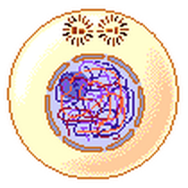
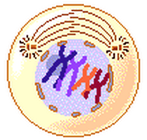
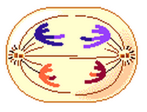
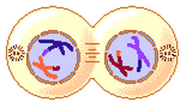
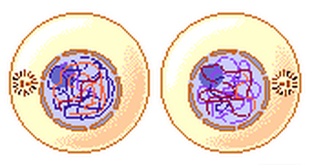
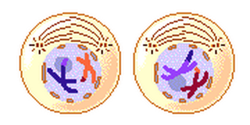
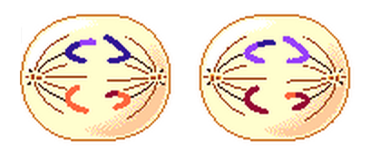
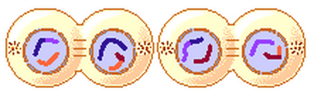
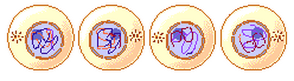

Interphase I
(same as in mitosis)
- 1. G1 = 1st Gap
- - Cell performs "everyday job"
- - Cell grows
- 2. S = DNA Synthesis
- - Copies chromosomes
- 3. G2 = 2nd Gap
- - Prepares for division
- - Cell grows more
-
● Cell spends most of its time in this phase.
-
● Nucleolus and nuclear envelope are distinct.
-
● Chromosomes are in the form of threadlike chromatin.

Prophase I
Part of Meiosis I
-
● DNA coils into chromosomes.
-
● Synapsis occurs.
-
- the pairing of homologous chromosomes to form tetrads
-
● Crossing over, a form of genetic recombination, may occur.
-
- a process in which portions of chromatids may break off
and attach to the adjacent chromosome of the tetrad
-
● The nuclear membrane and nucleolus disassemble.
-
● Spindle fibers appear.

Anaphase I
Part of Meiosis I
-
● Each homologous chromosome moves to an opposite pole of the dividing cell.
-
● The random separation of the homologous chromosomes is called independent assortment, another form of genertic recombination.

Telophase I
Part of Meiosis I
-
● The chromosomes reach the opposite ends of the cell, and cytokinesis begins.
- ● Spindle fibers disassemble

Cytokinesis I
Part of Meiosis I
- ● Similar to cytokinesis in mitosis.
- ● Either a cleavage furrow or cell plate is formed (depending on type of cell) and eventually the cell splits.
- ● Produces two new cells, each containing one chromosome from each homologous pair.
- ● The new cells contain half the number of chromosomes of the original cell.
- ● There are two copies (as chromatids) of each chromosome in the offspring.

Interphase II
- ● Is either very brief or may not even happen at all.
- ● DNA does not replicate again.
- ● The phases from here match up with mitosis.
Prophase II
Part of Meiosis II
- ● Spindle fibers form.
- ● Chromosomes begin to move towards the midline of the dividing cell.

Anaphase II
Part of Meiosis II
- ● The chromatids separate and move toward opposite poles of the cell.

Telophase II
Part of Meiosis II
- ● The chromosomes reach the poles.
- ● Spindle fibers disassemble.
- ● DNA decondenses into chromatin.
- ● Nuclear membrane and nucleolus reform.

Cytokinesis II
Part of Meiosis II
- ● Splitting of cytoplasm that results in 4 new cells with half as many chromosomes as the cell's original number of chromosomes.
